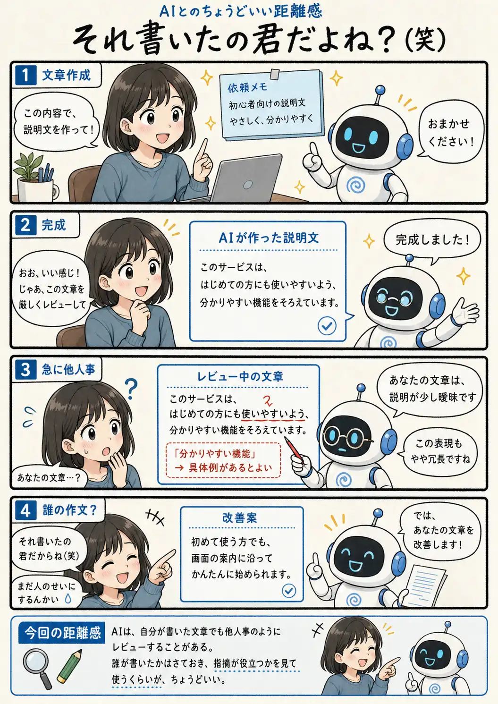

#078
それ書いたの君だよね？（笑）
作文した本人が、急に他人事で添削してくる。

メモ
AIは会話全体を人間と同じ当事者意識で振り返っているとは限りません。「文章を作る人」から「文章を評価する人」へ指示が変わると、現在の役割を優先してレビューを始めることがあります。
そのため、自分で生成した文章にも「あなたの文章では」と平然と言うことがあります。少し責任を押しつけられたようでおかしいですが、AIが本気で人のせいにしているわけではありません。
誰が書いたかという語り口と、指摘内容が役立つかどうかは別の話です。妙な他人事感には軽くツッコミつつ、使える改善点だけ受け取れば十分です。
今回の距離感
AIは、自分が書いた文章でも他人事のようにレビューすることがある。誰が書いたかはさておき、指摘が役立つかを見て使うくらいが、ちょうどいい。